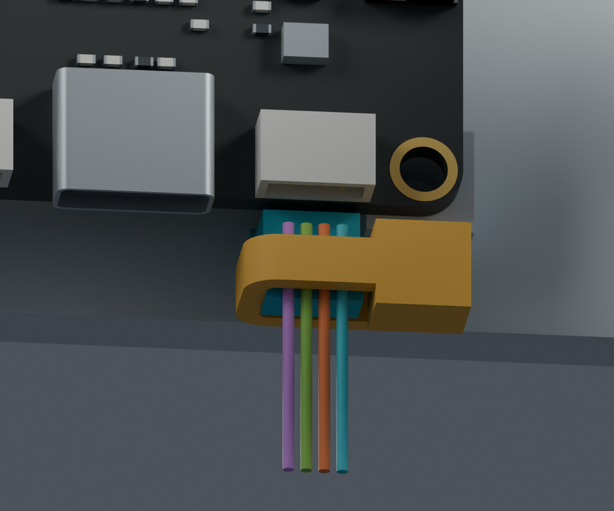
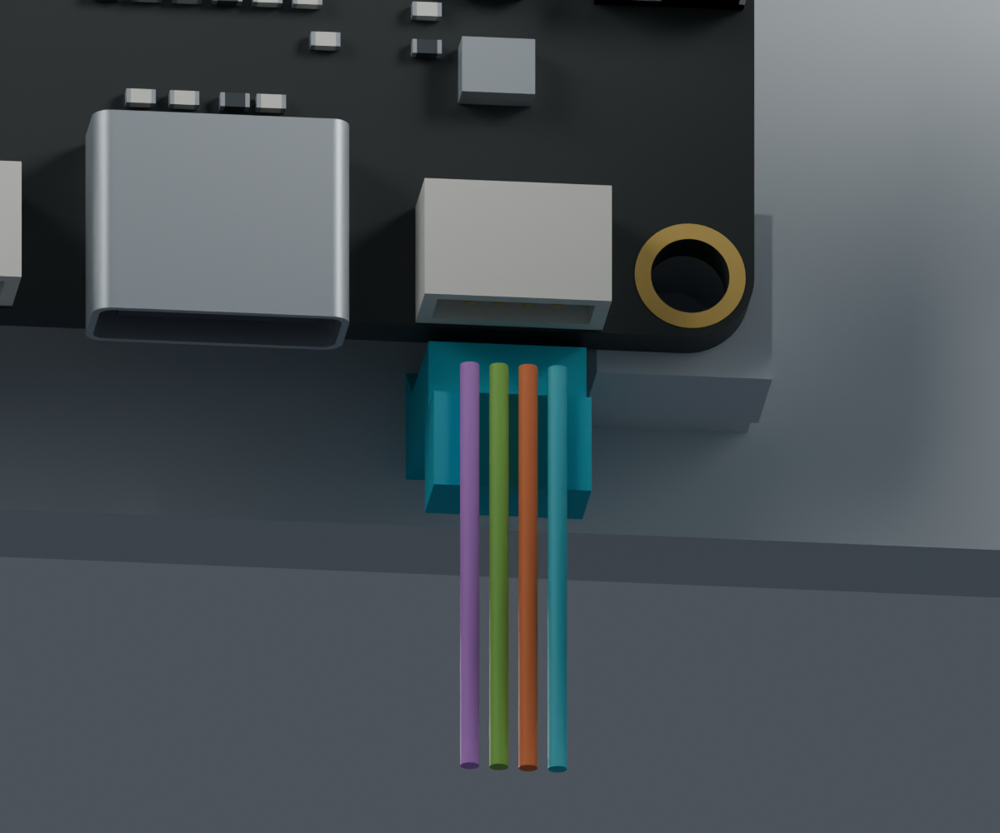
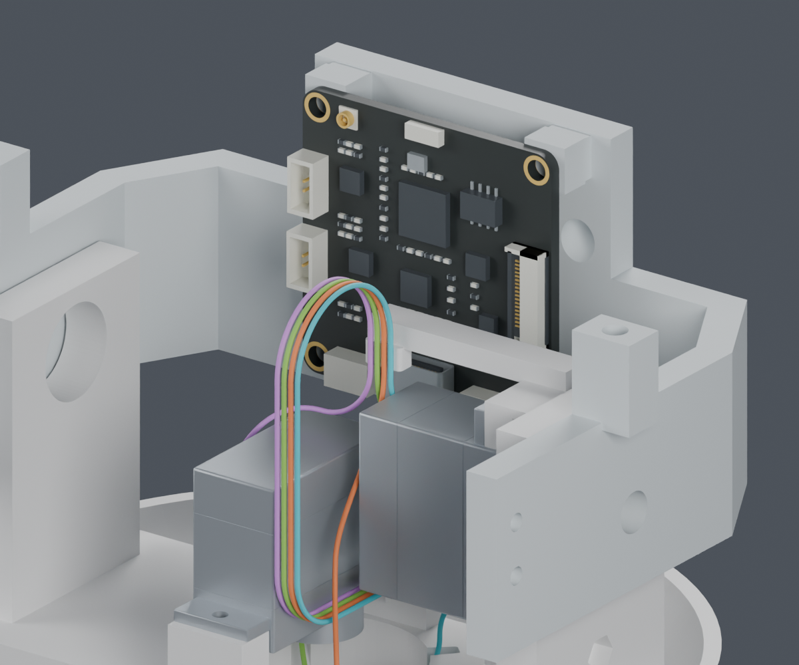
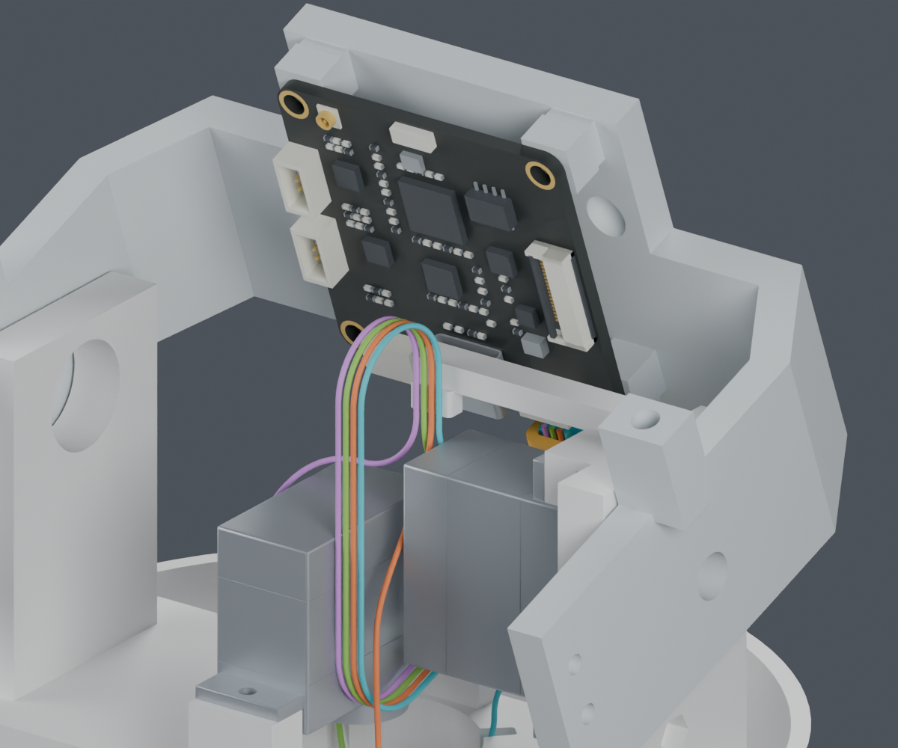

短固定座并入现有头托；不增加打印件、螺钉或走线孔，保留所有原导线和硬件位置。局部名义几何检查通过。
独立候选，主模型仍为M1.47。完整线束安装、实际夹紧和供应商加工图尚未完成；这些工作仍由项目继续处理。


先把插头插到CAM板上，再将板卡、插头和局部松弛导线一起装入头托，然后固定扎带。板卡装好以后从下方直插，会碰到固定座。
| 检查 | 结果和范围 |
|---|---|
| 固定座与源件 | 22590次相对位置检查，最近名义间隙约0.40mm；有限头部姿态 |
| 导线 | 600条相对路线及4根局部直段通过；实际夹紧和绝缘压伤未验证 |
| 局部台面装入 | 预插CAM板201个位置，预放闭环121个位置通过；手部、完整尾线及柔性穿紧未验证 |
| 保存与范围 | 候选保持单实体，其他208个物理对象保留；主模型未应用 |
| 完整线束和加工图 | BLOCKED：其余头部导线/FPC、完整固定和安装尚未完成 |


JST连接器、端子和压接目录已经取得，T18R官方图纸也已归档。逐项资料补查列出仍缺的舵盘、真实互配、FPC和WeAct接口字段。供应商按图制作已确定，不再作为待用户决定项。
原来的长支架、局部侧移和前段夹持候选均因间隙或相交未采用。完整说明与失败记录。保留这些记录，未覆盖主模型。